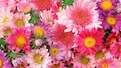
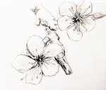
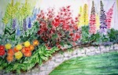
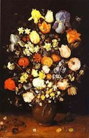

This is a type of art that uses acrylic paint to show the details in the flowers.
This is a type of art that uses a computer to show how a flower looks in reality.
This is a type of art that uses either a pencil or pen to create how a flower looks with a little bit of shading on the sides.
This is a type of art that uses spray paint to show how flowers looked in someone else's perspective.
This is a type of art uses the traditional paint and it shows how people before used to paint things.